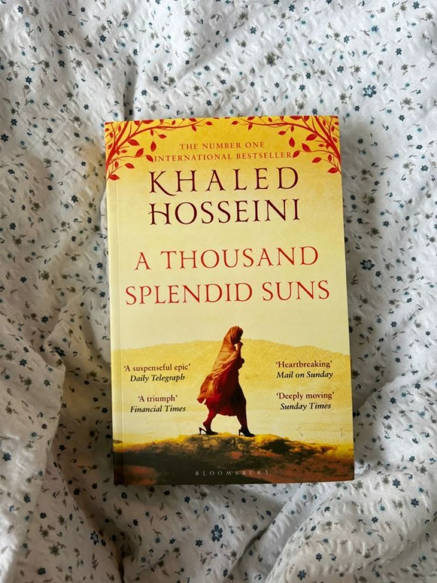

A Thousand Splendid Suns
I experienced the book and felt like I was moving through life with them, and it reduced me to tears. It was poignant and dolorous, it killed me softly but surely. I cried with Mariam, mourned with Laila, felt the joy for her and Tariq, the situations that Mariam and Aziza shared. I found solace during a difficult period in my life, and it shall live with me.


Born A Crime
You want to read well written memoir of a brown skin boy and an insouciant mother? Welcome and have a book - it is "Born A Crime". He narrated boyish mischief and the love of an African Mother in a hilarious way that is so heart warming and inspiring. I laughed and cried all the way to the end.
"The richer you are, the more choices you have. That is the freedom of money."
"Love is a creative act. When you love someone, you create a new world for them."
"We tell people to follow their dreams, but you can only dream of what you can imagine, and depending on where you come from, your imagination can be quite limited."
"Trevor.remember a man is not determined by how much he earns.You can still be a man of the house and earn leass than your woman.Being a man is not what you have , it's who you are.Being more of a man doesn't mean you woman has to be less than you."
"People always lecture the poor."Take responsibilty for yourself!"Make something for yourself!"But with what raw materials are the poor to make something of themselves?People love to say,"Give a man a fish and he'll eat for a day.Teach a man to fish,and he'll eatfor a lifetime."And it would be nice if you gave him a fishing rod.""That's the part of the analogy that's missing."

Americanah
Chimamanda Ngozi Adichie is an evocative writer of Modern African Literature. The story follows the life of a young girl Ifemelu to adulthood in realness. Chimamanda captures the metamorphosis of her interests, her love lives, the assimilation to American culture. She captures her monologues and the embarrassment that sits at the base of a spine. She captures the emancipation of an African woman. Finally the beginning is sometimes the end when she reunites with her first love Obinze in Nigeria.
"The problem with stereotypes is not that they are untrue, it is that they are incomplete. They make one story the only story."
"This was love: A string of coincidences that gathered significance and became miracles."
Why did people say that love was blind?It was not blind. It saw and it chose. It saw and it made a decision. It saw and it said,"I want this one."Love was not blind. It was sighted and it chose wrong.
Why did people ask "What is it about?" as if a novel to be about only one thing?A novel was about everything. It was about the world and the human condition and the human heart and the human soul. It was about love and loss and friendship and betrayal and family.
"If you dont understand, ask questions.if you are uncomfortable about asking questions , say you are uncomfortable about asking questions and then ask anyway.It is always easy to tell when a question is coming from a good place.Then listen some more.Sometimes people just want to feel heard.Here's to possibilities of friendship and connection and understanding."
"But she had not had a bold epiphany and there was no cause;it was simply that layer after layer of discontent had settled in her , and formed a mass that now propelled her.She did not tell him this , because it would hurt him to know that she had felt like this for a while, that her relationship with him was like being content in a house but always sitting by the window looking out"
"Each memory stunned her.Each brought a sense of unassailabe loss , a great burden hurtling towards her and she wished she could duck , lower herself so that it would bypass her,so tha she would save herself. This was what novelists meant by suffering.She had often thought it was a little silly, the idea of suffering for love , but now she understood"

The Daily Laws
The Core Idea: The world is not what it appears. People, don’t wish you well. They wish you to obey their commands and think the way they think. The goal of The Daily Laws is to help you see behind the masks. Spot what really powers others – greed, envy, desire for power – and also identify what moves you. Eventually, you’ll realize that you are flawed – like everyone else. But instead of moaning, by using the suggestions in the book, you will overcome your own negative traits and figure out what you should do with your life.
January – Your Life's Task: Focuses on discovering your unique calling and planting the seeds for mastery.
February – The Ideal Apprenticeship: Emphasizes deep learning, humility, and transforming yourself through rigorous training.
March – The Master at Work: Focuses on activating your skills, honing your craft, and attaining true proficiency.
April – The Perfect Courtier: Explores social intelligence, the game of power, and navigating complex hierarchies.
May – The Supposed Nonplayers of Power: Teaches how to recognize toxic types and subtle manipulation strategies used by those who claim to avoid power games.
June – The Divine Craft: Centers on mastering the arts of indirection, manipulation, and creative thinking.
July – The Seductive Character: Borrowing from The Art of Seduction, this month focuses on penetrating hearts and minds through psychological charm.
August – The Master Persuader: Guidance on softening resistance, storytelling, and the art of persuasion.
September – The Grand Strategist: Strategies for rising out of "tactical hell" to focus on long-term objectives and high-level strategy.
October – The Emotional Self: Focuses on understanding human nature and coming to terms with our "dark side" or Shadow.
November – The Rational Human: Encourages realizing your higher self throughrationality and emotional self-control.
December – The Cosmic Sublime: Expands the mind toward existential musings, mortality, and the "infinite" to create a sense of urgency.